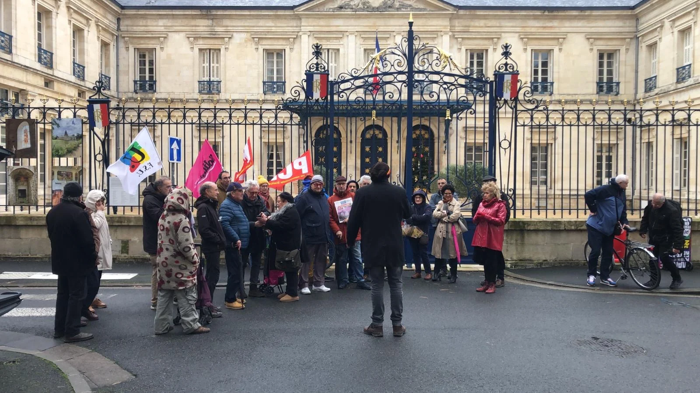

Compte rendu fédéral
À Niort, rassemblement de solidarité avec le peuple kurde
Date indiquée par Facebook · 7 janvier 2023
Repères éditoriaux
Nous nous sommes rassemblés devant la préfecture le 7 janvier. Le compte rendu revient sur les assassinats de militantes kurdes et sur l’exigence de justice.
Texte conservé avec la publication
Rassemblement de soutien au peuple kurde devant la préfecture à Niort
Il y a dix ans, trois militantes Kurdes étaient abattues en plein cœur de Paris. Si le meurtrier a été identifié, on ignore les commanditaires. Mais les preuves existent des liens du tueur avec le MIT, les services secrets turcs. Mais la justice se heurte au mur du secret-défense. Comme si une « raison d’État » imposait d'étouffer la vérité au nom des intérêts supérieurs des relations avec les autorités turques.
Ce déni de justice est encore plus insupportable après la nouvelle tuerie perpétrée la veille de Noël devant le centre culturel kurde à Paris, à l'encontre de trois militant.e.s kurdes dont une responsable du mouvement des femmes kurdes.
Ce rassemblement à Niort répondait à l'appel national d'une quinzaine de partis, associations et syndicats. N'oublions pas que des centaines de membres du parti des travailleurs du kurdistan (PKK) ont été en première ligne dans la lutte contre l'organisation dite de « l'Etat islamique » et lui ont infligé sa première défaite à Kobané.
Ce rassemblement était en soutien au peuple Kurde mais aussi pour demander au gouvernement que toute la lumière soit faite sur ces assassinats éminemment politiques.

Sources
Archive rouge · export Facebook · AR-0002-FB-01785
À lire aussi · À Niort, appel au rassemblement du 7 janvier en soutien au peuple kurde